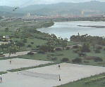

呂清夫 撰文

公園是都市之肺，可以給城裏人帶來新鮮的空氣，因之世界著名的大公園莫不處在鬧區之中，如紐約的中央公園、巴黎的盧森堡公園、倫敦的海德公園、東京的上野公園，都位於都市的心臟地帶。只有台北的大型公園都跑到偏遠地區（註：本文執筆時尚未有七號公園），如陽明山公園、南港公園、濱江公園、青年公園，都是遠在天邊，在國際都市之中，台北鬧區的公園規模一直敬陪末座，雪上加霜的是，空氣的污濁卻是名列前茅，每一部機車的發動莫不增加了社會的成本，而機車是台北特有的景觀，因為只有台北不設地下鐵，因此沒有機車行不得也。據「大地雜誌」的資料顯示，台北的公園預定地歷年來一再變更計畫，一號公園變成了圓山兒童育樂中心，二號公園變成了台北市立美術館及憲兵司令部，五號公園改成市立體育場，六號公園改作國父紀念館，九號公園變更為學校，七號公園則是前途未卜，興建體育館的聲浪甚高。而政府每一次變更計畫似乎都面不改色，實在今人不解。像東區那種新興地帶，本可以好好興建一個公園，但是沒有，我們並無長遠的眼光，只急於解決眼前的問題。因之，東區較大的普通公園就只有一個被腰斬成兩段的琉公公園，而且如果沒有特別指明，大家還不知道那是一個公園，因為樹木太少，沒有草地，雜亂無章，彷彿是兩個較大的安全島而已，難怪鮮有人知。南區的兒童公園（交通公園）本來立意甚佳，仿自國外的同型公園，亦即可讓兒童在公園中騎腳踏車，自由通過各種交通號誌，以熟習交通規則，寓教育於遊戲，構想極好。只是千呼萬喚，都不出來，主其事者有一年說兒童節要開幕，過幾年又說國慶日開幕，但都黃牛了事。有個鄰居的婦人在孩子未出生之前就期待公園的開張，但是現在兒女都出生又唸了小學，卻還看不到公園。有個朋友的孩子也在期待公園的開放，但是現在他已唸了高中，兒童公園仍不見蹤影，他的童年之夢也只好泡湯了。可知台北鬧區的新建公園不是小兒科，就是難產。七號公園固如是，兒童公園亦如是，其實兒童公園也不在鬧區，而是在汀州路的新店溪邊，仍屬偏遠。大台北地區的另一個特殊景觀是盛行河濱公園，其實那怎麼算公園，第一，它不能種高大的樹木，因為大樹妨礙洩洪，因之，民眾毫無遮蔭之處。第二，它經不起漲水，每逢颱風來襲，南區的河濱公園，往往一一滅頂，等到河水退去之後，公共設施隨之泡湯，球場、溜冰場積下的泥沙常有兩、三公分厚，也不知何時才能復原，其他新種的矮樹又都死的死、倒的倒，慘不忍睹。但是這種蹩腳的公園我們也不能小看，因為有了這些占地可觀的河川綠地，於是常被人拿去作為玩數字遊戲的假象，徒然減低突破困境的決心與步調，譬如談到公園綠地的比例有多少時，如果河川地也算進去，比例便增高了，但實質上是灌水的比例。只是我們的社會，常常喜歡把假象當真相，把神話當現實，公園如果也是這樣，那就只好稱其為阿Q公園了。台北的心臟地帶不但新的公園建設不成，而且舊的公園又被一一蠶食。光復以後的新公園、植物園不是被切掉一大塊，就是蓋上一大堆建築，人口越多，公園反而越小，而且似乎還會永無寧日的小下去。如近日的捷運系統便在割新公園的肉，將來難保又有什麼系統出現，奄奄一息的公園又得割地求和了。本來，人稠地狹，綠地越來越小看似理所當然，但在人口密度近乎台灣的荷蘭就不會這樣，像阿姆斯特丹，並不是任何人高興遷進去就可以進去，荷蘭政府規定，要遷入該城的條件是先要有人遷出才行，換句話說，阿姆斯特丹的居民是有一定的配額，以維持某種程度的居住品質。由此觀之，現在政府總要想出一個辦法來爭取公園綠地，否則未來的台北可能寸草不留，寸土不空，而一個沒有肺部的城市，它還會活命嗎？尤有甚者，萬一大地震一來，更沒有一塊空地可以逃生，這樣的城市還是人住的地方嗎？
原載1990.12.15.自立早報